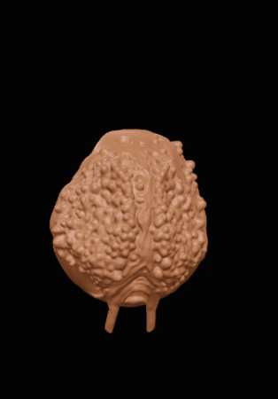

Ethos
Divinity through sculptural forms that impose themselves in space. The hand as the maker's tool, the face as a mirror of the other. These forms refuse beginnings or endings — they break, branch, and fold into themselves.
Spirituality as an unconscious force, creating itself in the moment, fragile yet resonant.